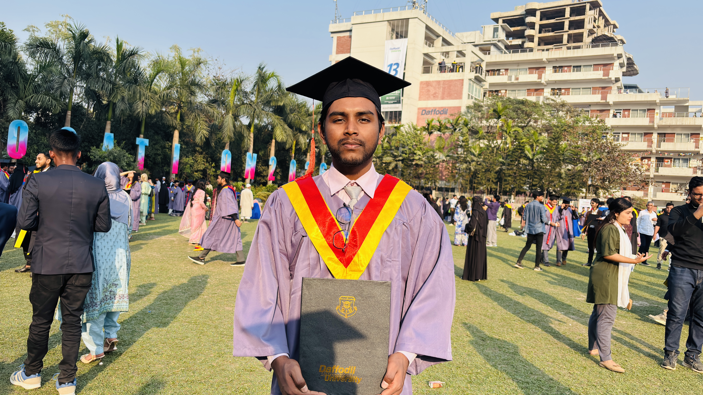

Nazmul Huda Badhon (he/him)
View CV
Dhaka, Bangladesh


Nazmul Huda Badhon is a Bachelor of Science graduate in Computer Science and Engineering, Class of 2026, from Daffodil International University. His undergraduate thesis is on "Tabular data based lightweight convolutional neural networks for electricity energy demand prediction" under the supervision of Associate Professor Nazmun Nessa Moon. His research focuses on designing computationally efficient deep neural network architectures.
Exploring research roles in Deep Learning & Computer Vision
Deep Learning · Machine Learning · Computer Vision
Academic Profile
My research journey began during my second year of
undergraduate studies at Daffodil International University,
Bangladesh. While studying there I took part in a semester exchange
program
at Dongseo
University, South Korea, and this experience
significantly strengthened my interest in deep learning and
advanced AI research. During this period, I formed and worked
with a dedicated research
team, collaboratively developing machine learning and
deep learning projects and systematically publishing our
findings in peer-reviewed journals.
I have experience in international research collaboration with
research teams across multiple countries. Throughout this
journey, I have had the privilege of collaborating closely
with my research mentor Imrus
Salehin and team members SM
Noman, Md
Tomal Ahmed Sajib, Nazrul
Amin, and
Pritom
Saha. These collaborations have resulted in several peer-reviewed
publications in
high-impact venues including, Global Energy
Interconnection,
Elsevier, Engineering Reports, Wiley, Taylor &
Francis.
Academic Highlights
-

BSc Convocation
-

Undergraduate Thesis
-

Semester Exchange
-

International Academic Camp
-

Top Performer in Computer Vision Bootcamp
My work and academic efforts have been recognized through key honors including the fully funded Global Korea Scholarship GKS in 2023 by the Government of the Republic of Korea and the Research Award in 2024 and 2025 from the Division of Research and Department of Computer Science and Engineering at Daffodil International University. I was also acknowledged as a Top Performer in the Computer Vision and Deep Learning bootcamp for Medical Data at DIU.
Education
Bachelor of Science in Computer Science and Engineering
 Daffodil International University,
Daffodil International University,
Dhaka, Bangladesh
Spring 2022 – Fall 2025 CGPA:
3.88 / 4.00
Semester Exchange, Computer Engineering
 Dongseo
University, South Korea
Dongseo
University, South Korea
 Global Korea
Scholarship (GKS)
Fall 2023
Global Korea
Scholarship (GKS)
Fall 2023
Recent Key Publications
Nazmul Huda Badhon, Sabit Ahamed Preanto, Abu Shahed Shah Md Nazmul Arefin, Kazi Jahid Hasan, Md. Baharul Islam, "Temporal Convolutional Network Based Indoor Location Recognition from BLE Beacon Signals in Nursing Care Facility." In International Journal of Activity and Behavior Computing, , Kyushu Institute of Technology, Japan, April 2026.
Nazmul Huda Badhon, Imrus Salehin, Md Tomal Ahmed Sajib, Md Sakibul Hassan Rifat, SM Noman, Nazmun Nessa Moon, " TLCNN: Tabular data-based Lightweight Convolutional Neural Network for Electricity Energy Demand Prediction. " In Global Energy Interconnection, Elsevier, December 2025.
Md Tomal Ahmed Sajib, Nazmul Huda Badhon, Imrus Salehin, Md Sakibul Hassan Rifat, Faysal Ahmed, Nazmun Nessa Moon, "A comparative deep learning methodology for plant insect image classification: assessment of CNN architectures and augmentation techniques " In MethodsX, December 2025.
Imrus Salehin, Md Tomal Ahmed Sajib, Nazmul Huda Badhon, Md Sakibul Hassan Rifat, Nazrul Amin, Nazmun Nessa Moon, "Systematic Literature Review of LLM–Large Language Models in Medical: Digital Health, Technology and Applications. " In Engineering Reports, September 2025.